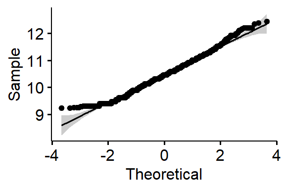

Generalized Linear Models
2025-11-10
Introduction
One of the primary assumptions with linear regression, is that the error terms have a specific distribution. Namely:
\[ \epsilon_{i} \sim \mathcal{N}(0, \sigma^{2}) \qquad i=1, \ldots, n, \quad \mbox{and } \epsilon_{i} \perp \epsilon_{j}, i \neq j \]
When your outcome variable \(y\) is non-continuous/non-normal, the above assumption fails dramatically.
Generalized Linear Models (GLM)
Allows for different data type outcomes by allowing the linear portion of the model (\(\mathbf{X}\beta\)) to be related to the outcome variable \(y\) using a link function, that allows the magnitude of the variance of the errors (\(\sigma\)) to be related to the predicted values themselves.
There are a few overarching types of non-continuous outcomes that can be modeled with GLM’s.
- Binary data: Logistic or Probit regression
- Log-linear models
- Multinomial/categorical data: Multinomial or Ordinal Logistic regression.
- Count data: Poisson regression
Linking the response to the predictors
All regression models aim to model the expected value of the response variable \(Y\) given the observed data \(X\), through some link function \(C\)
\[E(Y|X) = C(X)\]
Depending on the data type of \(Y\), this link function takes different forms. Examples include:
- Linear regression: C = Identity function (no change)
- Logistic regression: C = logit function
- Poisson regression: C = log function
Fitting GLM
The general syntax is similar to lm(), with the additional required family= argument. See ?family for a list of options.
Example for Logistic regression would be:
Log-linear models
A log-linear model is when the log of the response variable is modeled using a linear combination of predictors.
\[ln(Y) \sim XB +\epsilon\]
- In statistics, when we refer to the log, we mean the natural log ln.
- This type of model is often use to model count data using the Poisson distribution, or to achieve normality when the response variable is right skewed.
Interpreting results
Since we transformed our outcome before performing the regression, we have to back-transform the coefficient before interpretation. Similar to logistic regression, we need to exponentiate the regression coefficient before interpreting.
When using log transformed outcomes, the effect on Y becomes multiplicative instead of additive.
- Additive For every 1 unit increase in X, y increases by b1
- Multiplicative For every 1 unit increase in X, y is multiplied by \(e^{b1}\)
Example
let \(b_{1} = 0.2\).
- Additive For every 1 unit increase in X, y increases by 0.2 units.
- Multiplicative For every 1 unit increase in X, y changes by a factor of \(e^{0.2} = 1.22\)
Sign of coefficient still is directly connected to direction of association.
Percent Change
Thus we interpret the coefficient as a percentage change in \(Y\) for a unit increase in \(x_{j}\). We are interested in the difference between the estimate and the value of 1.
- Let \(b_{j} = -0.2\). Then \(e^{-0.2} = 0.82\), and \((1-0.82) = .18\)
- The expected value of \(Y\) for when \(x=1\) is 18% lower than when \(x=0\)
- Let \(b_{j} = 0.2\). Then \(e^{0.2} = 1.22\), and \((1.22-1) = .22\)
- The expected value of \(Y\) for when \(x=1\) is 22% percent higher than when \(x=0\)
Example: Personal Income
We are going to analyze personal income from the AddHealth data set. Income naturally is right skewed, but a log transformation fixes this problem nicely.
Show the code
ggdensity(addhealth, x = "income", fill = "springgreen4") +
stat_overlay_normal_density(color = "darkgreen", linetype = "dashed")
ggdensity(addhealth, x = "logincome", fill = "skyblue") +
stat_overlay_normal_density(color = "navy", linetype = "dashed")
ggqqplot(addhealth, x = "income")
ggqqplot(addhealth, x = "logincome")



Identify variables
- Quantitative outcome that has been log transformed: Income (variable
logincome) - Quantitative predictor: typical time waking up on a work day (variable
wakeup) - Binary predictor: Gender (variable
female_c)
The mathematical multivariable model looks like:
\[ln(Y) \sim \beta_{0} + \beta_{1}x_{1} + \beta_{2}x_{2}\]
Fit a linear regression model
Call:
lm(formula = logincome ~ wakeup + female_c, data = addhealth)
Residuals:
Min 1Q Median 3Q Max
-1.32215 -0.33473 -0.00461 0.34058 2.01559
Coefficients:
Estimate Std. Error t value Pr(>|t|)
(Intercept) 10.653062 0.025995 409.805 < 2e-16 ***
wakeup -0.014907 0.003218 -4.633 3.73e-06 ***
female_cFemale -0.192710 0.017000 -11.336 < 2e-16 ***
---
Signif. codes: 0 '***' 0.001 '**' 0.01 '*' 0.05 '.' 0.1 ' ' 1
Residual standard error: 0.5233 on 3810 degrees of freedom
(2691 observations deleted due to missingness)
Multiple R-squared: 0.03611, Adjusted R-squared: 0.0356
F-statistic: 71.36 on 2 and 3810 DF, p-value: < 2.2e-16The fitted model is: \(ln(\hat{y}) = 10.65 - 0.0149x_{wakeup} -0.193x_{female}\)
The coefficient estimates \(b_{p}\) are not interpreted directly as an effect on \(y\).
Exponentiate & Interpret
Recap: \(e^{b_p}\) is the percent change. (ref Section 8)
- For every hour later one wakes up in the morning, one can expect to earn
1-exp(-0.015)= 1.4% less income than someone who wakes up one hour earlier. This is after controlling for gender. - Females have on average
1-exp(-0.19)= 17% percent lower income than males, after controlling for the wake up time.
All the math at once
Extract point estimate using coef()
Extract CI using confint()
2.5 % 97.5 %
wakeup 0.02099299 0.008561652
female_cFemale 0.20231394 0.147326777Both gender and time one wakes up are significantly associated with the amount of personal earnings one makes. Waking up later in the morning is associated with 1.4% (95% CI 0.8%-2%, p<.0001) percent lower income than someone who wakes up one hour earlier. Females have 17% (95% CI 15%-20%, p<.0001) percent lower income than males.